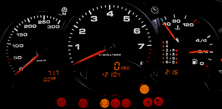

El tablero de un automóvil muestra la velocidad, el nivel de combustible y la temperatura del motor. Cada indicador resume información en un dato que el conductor entiende de inmediato.

Con los datos ocurre algo similar. Una base puede tener miles de filas, pero unos pocos indicadores permiten describirla, compararla y comunicar lo importante. Esta página presenta qué son, qué tipos existen y dónde se usan.
Un indicador estadístico es un número calculado a partir de los datos que resume una característica de una variable. Por ejemplo, la media resume el valor típico, y la desviación estándar resume qué tan separados están los datos.
Si se calcula con todas las unidades de una población, se llama parámetro. Si se calcula con una muestra, es una estimación.
Para una variable cuantitativa, los indicadores se agrupan según la pregunta que responden:
| Tipo | Pregunta que responde | Ejemplos |
|---|---|---|
| De centro | ¿Cuál es un valor típico? | Media, mediana y moda |
| De posición | ¿Qué valor deja un porcentaje de datos por debajo? | Cuartiles, deciles, quintiles y percentiles |
| De dispersión | ¿Qué tan separados están los datos? | Rango, varianza, desviación estándar y coeficiente de variación |
| De forma | ¿Cómo es la distribución? | Asimetría y curtosis |
Estos indicadores describen a los tiempos de la carrera La Luz 2022:
tiempo <- CarreraLuz22$timerun / 60
resumen <- c(
media = mean(tiempo),
mediana = median(tiempo),
cuartil_1 = unname(quantile(tiempo, 0.25)),
cuartil_3 = unname(quantile(tiempo, 0.75)),
desviacion = sd(tiempo),
coef_variacion = 100 * sd(tiempo) / mean(tiempo),
asimetria = mean((tiempo - mean(tiempo))^3) / sd(tiempo)^3
)
round(resumen, 2) media mediana cuartil_1 cuartil_3 desviacion
65.26 63.51 56.35 73.26 12.72
coef_variacion asimetria
19.49 0.69 Con esos valores se puede decir que el tiempo típico fue de cerca de 64 minutos, que la mitad central de los atletas tardó entre 56.4 y 73.3 minutos, y que hay una cola de tiempos altos. Las próximas páginas explican cada indicador.
Los indicadores aparecen en boletines oficiales, informes y artículos científicos. Estos son algunos ejemplos reales:
| Ámbito | Publicación | Indicador | Valor reportado |
|---|---|---|---|
| Precios | DANE, IPC, septiembre de 2026 | Variación anual del IPC | 6.29 % |
| Empleo | DANE, GEIH, agosto de 2026 | Tasa de desocupación | 9.4 %, frente a 8.6 % en agosto de 2025 |
| Pobreza y desigualdad | DANE, pobreza monetaria, 2025 | Incidencia de pobreza y coeficiente de Gini | 28.0 % y 0.531 |
| Educación | Icfes, Saber 11, 2023 | Promedio y desviación estándar del puntaje global, calendario A | 257 y 51 puntos |
| Salud infantil | OMS, estándares de crecimiento | Percentiles y puntajes z de peso para la edad | Tablas por sexo y edad |
| Ingresos | U.S. Census Bureau, 2025 | Mediana del ingreso de los hogares e índice de Gini | USD 87,460 y 0.490 |
| Investigación clínica | Guan et al. (2020), reseñado por Eastin y Eastin | Edad mediana y rango intercuartílico de 1,099 pacientes | 47 años (35 a 58) |
Algunos de estos indicadores son proporciones, como la tasa de desocupación, y otros se construyen con métodos propios. El DANE, por ejemplo, define el coeficiente de Gini como un indicador de desigualdad cuyos valores van de 0, igualdad absoluta, a 1, desigualdad absoluta.
Dos grupos pueden tener la misma media y ser muy distintos. Estas son las edades de dos grupos de 30 personas:
grupo1 <- c(27, 27, 28, 28, 34, 28, 26, 33, 24, 28, 25, 25, 33, 27, 34,
38, 24, 26, 22, 23, 33, 23, 26, 26, 32, 33, 29, 30, 25, 23)
grupo2 <- c(35, 25, 19, 17, 24, 17, 55, 25, 31, 35, 43, 28, 32, 19, 20,
17, 25, 18, 21, 22, 17, 35, 29, 20, 54, 46, 24, 29, 40, 18)
c(media_1 = mean(grupo1), media_2 = mean(grupo2))media_1 media_2
28 28 c(desviacion_1 = sd(grupo1), desviacion_2 = sd(grupo2))desviacion_1 desviacion_2
4.076848 10.811871 Las dos medias son iguales, pero el grupo 2 tiene mucha más dispersión. Por eso, un indicador de centro se reporta junto con uno de dispersión.
Las revistas científicas tienen guías para informar los resultados. Las guías SAMPL, de Lang y Altman, tratan el reporte estadístico en la literatura biomédica y recomiendan lo siguiente:
| Si la distribución es | Se reporta | Ejemplo |
|---|---|---|
| Aproximadamente normal | Media (desviación estándar) | 65.3 (12.7) minutos |
| No normal | Mediana y rango intercuartílico u otro rango, con sus límites | 63.5 (56.4 a 73.3) minutos |
Los ejemplos usan los tiempos de la carrera, solo para mostrar el formato. Además, las guías indican lo siguiente:
La versión mejorada de Indrayan (2020) agrega que, en grupos de 4 datos o menos, se presentan los valores originales, y que los indicadores llevan un decimal más que los datos originales.
Antes de usar una cifra conviene responder estas preguntas:
Por ejemplo, 9.4 % dice más cuando se sabe que es la tasa de desocupación del total nacional en agosto de 2026, y que en el mismo mes de 2025 fue de 8.6 %.
| Problema | Causa | Solución |
|---|---|---|
| Reportar solo la media | No se describe la variabilidad | Agregar un indicador de dispersión |
| Usar la media en una variable muy asimétrica | Los datos extremos la afectan | Reportar también la mediana y el rango intercuartílico |
| Comparar cifras de periodos distintos sin aclararlo | Falta el contexto | Indicar población, lugar y periodo |
| Confundir puntos porcentuales con porcentaje | De 8.6 % a 9.4 % hay 0.8 puntos porcentuales | Indicar qué tipo de cambio se reporta |
| Interpretar un percentil como un puntaje | El percentil indica una posición | Explicar qué porcentaje queda por debajo |
Indique si cada indicador es de centro, posición, dispersión o forma: mediana, percentil 90, rango intercuartílico, asimetría, moda y coeficiente de variación.
Un artículo informa que la edad de 1,099 pacientes tuvo una mediana de 47 años, con rango intercuartílico de 35 a 58. ¿Qué significan esas cifras?
La mitad de los pacientes tiene 47 años o menos. Cerca del 25 % tiene 35 años o menos, cerca del 25 % tiene 58 años o más, y la mitad central está entre 35 y 58 años.
Suponga que cinco personas ganan 1.2, 1.3, 1.5, 1.8 y 30 millones de pesos al mes. Calcule la media y la mediana. ¿Cuál describe mejor a un ingreso típico?
ingresos <- c(1.2, 1.3, 1.5, 1.8, 30)
c(media = mean(ingresos), mediana = median(ingresos)) media mediana
7.16 1.50 La mediana describe mejor un ingreso típico, porque un solo ingreso muy alto eleva la media por encima de lo que ganan los otros cuatro.
Con CarreraLuz22, calcule la media y la desviación
estándar del tiempo en minutos para hombres y mujeres. Escríbalas en el
formato media (DE).
medias <- tapply(tiempo, CarreraLuz22$sex, mean)
desviaciones <- tapply(tiempo, CarreraLuz22$sex, sd)
paste0(names(medias), ": ", round(medias, 1), " (", round(desviaciones, 1), ")")[1] "Hombre: 62 (12.3)" "Mujer: 70.4 (11.7)"Última revisión: 5 de noviembre de 2026.